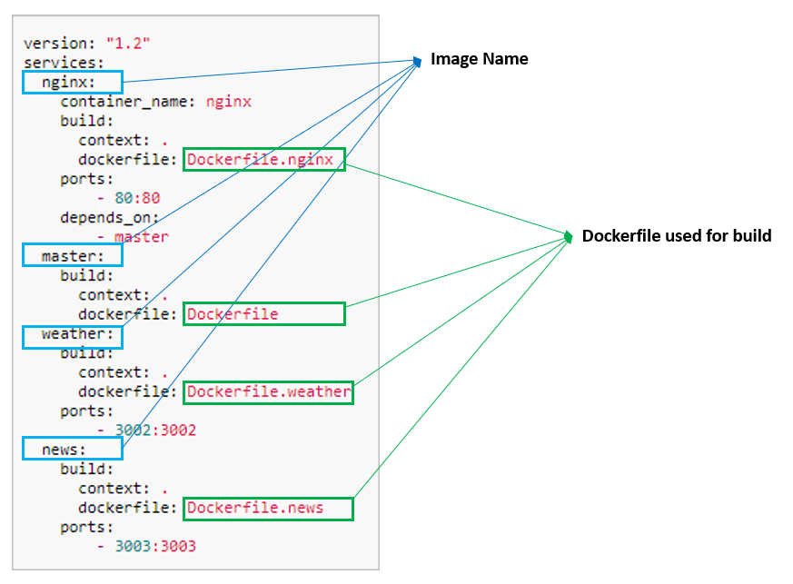

Create Docker Compose
We will define the docker-compose.yml file in this section. This is used by docker-compose to build and start all the services.

Create Docker Compose file
Create file docker-compose.yml and copy following contents:
version: "1.2"
services:
nginx:
container_name: nginx
build:
context: .
dockerfile: Dockerfile.nginx
ports:
- 80:80
depends_on:
- master
master:
build:
context: .
dockerfile: Dockerfile
weather:
build:
context: .
dockerfile: Dockerfile.weather
ports:
- 3002:3002
news:
build:
context: .
dockerfile: Dockerfile.news
ports:
- 3003:3003
This tells docker-compose to:
- Create 4 container images :
- nginx : This uses
Dockerfile.nginxand maps internal container port:80 to external port:80 - master : This uses
Dockerfile. Note that we are not providing a mapping of internal port:3001 as we expect to scale this app to many instances - weather : This uses
Dockerfile.weatherand maps internal container port:3002 to external port:3002 - news : This uses
Dockerfile.newsand maps internal container port:3003 to external port:3003
- nginx : This uses